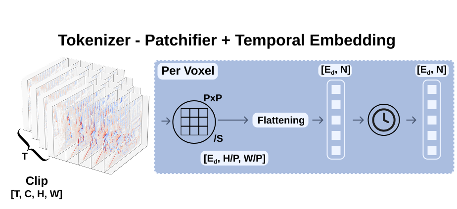
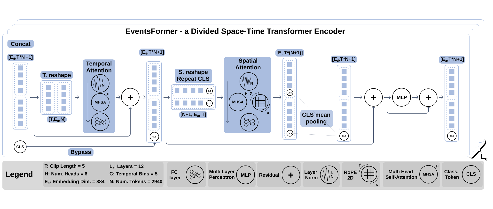
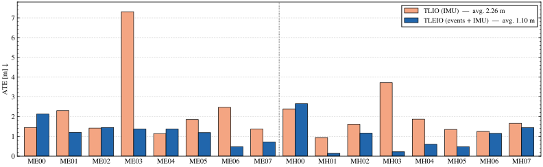
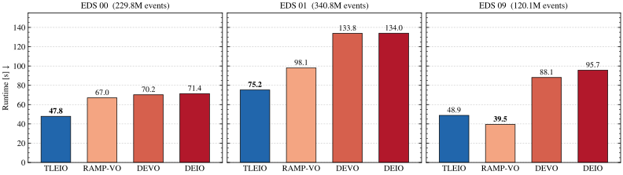

Abstract
Event cameras provide microsecond temporal resolution, high dynamic range, and sparse asynchronous measurements, making them compelling for odometry under fast motion and challenging illumination. Yet, accurate event-based state estimation remains difficult: existing systems often use events as a complement to frames or rely on feature tracking, correspondence search, and optimization-heavy backends, limiting the efficiency promised by event sensing. We introduce Tight Learned Event-Inertial Odometry (TLEIO), a compact filter-based pipeline that learns short-window relative motion directly from voxelized event streams and tightly fuses the resulting constraints with IMU propagation. Its learned front-end, EventsFormer, predicts local displacements and per-axis uncertainty from event voxels in a single forward pass, while a stochastic-cloning EKF fuses these overlapping predictions with IMU propagation, producing metric trajectories without explicit feature tracks and pose optimization at inference time. The network is trained directly from pose displacements, without requiring event-flow labels. We evaluate TLEIO on the TartanAir/TartanEvent benchmark and on real DAVIS240c sequences. On TartanAir, TLEIO reduces average ATE from 2.26 m to 1.10 m over the IMU-only TLIO baseline, while achieving up to 48.9% lower runtime than optimization-based event odometry methods.
Qualitative results
We ran the released checkpoint end to end on the fifteen sequences of the TartanEvent office environment. Pick a sequence to see the raw events next to the estimated 3D trajectory and orientation. The estimate is drawn exactly as the filter produces it: it starts at the true pose, and any gap to the dashed ground truth is accumulated drift.
About these runs
The office environment is part of the TartanEvent training data, so these sequences illustrate the pipeline rather than held-out accuracy (see Benchmark below). Event derotation and the 200 Hz IMU are derived from ground truth, and the filter starts from the ground-truth pose. Two filter parameters, the network displacement scale and the measurement-covariance scale, were calibrated once for all fifteen sequences together (0.85 and 4.0), never per sequence. The videos show the unaligned estimate. For ATE, the estimate is rigidly SE(3)-aligned to ground truth over the whole sequence (scale fixed); across the fifteen runs the median ATE is 1.55 m, or 1.7% of the path. Videos play at 2× speed.
Per-sequence metrics · Calibration grid · Run manifest · Scripts

Method
TLEIO splits odometry into a learned front-end that reads motion from events and a lightweight filter that integrates it with inertial data.
Event voxels
Events are accumulated in 50 ms windows of five temporal bins and derotated with the current orientation, so that what remains is mostly translational motion.
EventsFormer
A clip of consecutive voxels is split into patches and processed by a transformer with divided space–time attention. It regresses each short-window displacement together with a per-axis uncertainty, in a single forward pass.
Stochastic-cloning EKF
IMU measurements propagate the state at high rate. Each learned displacement becomes a relative-position update between cloned past poses, weighted by its predicted uncertainty. No feature tracks and no pose optimization.
EventsFormer architecture


Benchmark
Results reported in the paper, on the held-out TartanAir competition split, on real DAVIS240c recordings, and for end-to-end runtime on EDS.
vs. 2.26 m for IMU-only TLIO
DAVIS240c sequences
optimization-based event odometry


Full tables from the paper
| Seq. | EKLT-VIO | ORB-SLAM3 | COLMAP | DROID-VO | DPVO | RAMP-VO | TLIO | TLEIO |
|---|---|---|---|---|---|---|---|---|
| Input | E+F+I | F | F | F | F | E+F | I | E+I |
| ME00 | 12.80 | 13.61 | 15.20 | 0.22 | 0.16 | 0.20 | 1.45 | 2.13 |
| ME01 | 9.10 | 16.86 | 5.58 | 0.15 | 0.11 | 0.04 | 2.30 | 1.20 |
| ME02 | 16.23 | 20.57 | 10.86 | 0.24 | 0.11 | 0.10 | 1.42 | 1.45 |
| ME03 | 18.08 | 16.00 | 3.93 | 1.27 | 0.66 | 0.46 | 7.31 | 1.37 |
| ME04 | 16.96 | 22.27 | 2.62 | 1.04 | 0.31 | 0.16 | 1.14 | 1.37 |
| ME05 | 6.84 | 9.28 | 14.78 | 0.14 | 0.14 | 0.13 | 1.85 | 1.19 |
| ME06 | 21.44 | 21.61 | 7.00 | 1.32 | 0.30 | 0.12 | 2.47 | 0.48 |
| ME07 | 9.06 | 7.74 | 18.47 | 0.77 | 0.13 | 0.12 | 1.37 | 0.72 |
| MH00 | 14.68 | 15.44 | 12.26 | 0.32 | 0.21 | 0.36 | 2.39 | 2.65 |
| MH01 | 4.35 | 2.92 | 13.45 | 0.13 | 0.04 | 0.06 | 0.94 | 0.14 |
| MH02 | 10.20 | 13.51 | 13.45 | 0.08 | 0.04 | 0.04 | 1.61 | 1.16 |
| MH03 | 2.13 | 8.18 | 20.95 | 0.09 | 0.08 | 0.04 | 3.72 | 0.22 |
| MH04 | 2.72 | 2.59 | 24.97 | 1.52 | 0.58 | 0.41 | 1.87 | 0.60 |
| MH05 | 4.48 | 21.91 | 16.79 | 0.69 | 0.17 | 0.25 | 1.35 | 0.48 |
| MH06 | 6.95 | 11.70 | 7.01 | 0.39 | 0.11 | 0.11 | 1.25 | 1.15 |
| MH07 | 19.72 | 25.88 | 7.97 | 0.97 | 0.15 | 0.07 | 1.66 | 1.44 |
| Average | 10.98 | 14.38 | 12.50 | 0.58 | 0.21 | 0.17 | 2.26 | 1.10 |
| Method | Input | boxes trans. | HDR boxes | boxes 6DoF | poster trans. | HDR poster | poster 6DoF | Avg. |
|---|---|---|---|---|---|---|---|---|
| EKLT-VIO | E+F+I | 0.48 | 0.46 | 0.84 | 0.35 | 0.65 | 0.35 | 0.52 |
| Lee et al. | E+F+I | 0.74 | 0.69 | 0.77 | 0.28 | 0.52 | 0.59 | 0.60 |
| Rebecq et al. | E+I | 0.57 | 0.92 | 0.69 | 0.89 | 0.59 | 0.82 | 0.75 |
| HASTE-VIO | E+I | 2.55 | 1.75 | 2.03 | 1.34 | 0.57 | 1.50 | 1.62 |
| Zhu et al. | E+I | 2.69 | 1.23 | 3.61 | 0.94 | 2.63 | 3.56 | 2.44 |
| Ultimate-SLAM | E+I | 0.76 | 0.67 | 0.44 | 0.15 | 0.49 | 0.30 | 0.47 |
| DEIO | E+I | 0.07 | 0.09 | 0.05 | 0.04 | 0.06 | 0.08 | 0.07 |
| DEVO | E | 0.06 | 0.06 | 0.71 | 0.06 | 0.14 | 0.44 | 0.25 |
| TLEIO | E+I | 0.31 | 0.55 | 0.49 | 0.43 | 0.50 | 0.43 | 0.45 |
BibTeX
@misc{cascone2026tleio,
title = {Tight Learned Event-Inertial Odometry ({TLEIO}): a Transformer-Based
Architecture for End-to-End Motion from Event Streams},
author = {Cascone, Matteo and Jensen, David and Pirini, Alessandro and
Stefanini, Angelo and Ven{\`e}, Pietro and Tintor{\'e} Gazulla, Marta and
Hidalgo Carri{\`o}, Javier},
year = {2026},
eprint = {2610.33356},
archivePrefix = {arXiv},
primaryClass = {cs.CV}
}